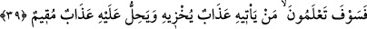
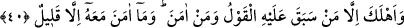
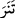

Şimdi çalış ki su senin belinden geçmektedir
Su belinden başına çıkıp sel olunca gayret fayda vermez.
39. “Kendisini rezil edecek azabın kime geleceğini ve sürekli bir azabın kimin
başına ineceğini yakında bileceksiniz.”
“Kendisini rezil edecek” alçaltıp zelil edecek “azabın” ki bu boğulma azabıdır
“kime geleceğini…” yakında bileceksiniz.
Burada azâb, rezil edici olmakla vasfediliyor. Çünkü alay etme ve küçük görme
hâdisesinde normal olarak rezillik ve utanma bulunur.
“ve sürekli bir azabın” devamlı olan ateş azabının kendisinden kurtulmak mümkün
olmayan bir borç gibi “kimin başına ineceğini” bunların kim olduğunu “yakında
bileceksiniz.”
Bu ifadede kapalı istiâre vardır. Çünkü Allah’ın, başlarına geleceğine hükmettiği
uhrevî azap, ödeme vakti kesin olarak gelecek olan vadeli borca benzetilmiştir. Böyle
bir borcun ayrılmaz özelliklerinden biri vadesi gelme özelliği uhrevî azaba verilmiştir.
40. Nihayet emrimiz gelip de tandır kaynayınca (sular coşup yükselmeye
başlayınca) Nuh’a dedik ki: “(Canlı türlerinin) her birinden birer çift ve
aleyhlerinde (boğulacaklarına) hüküm verdiklerimiz dışında âileni ve îmân edenleri
gemiye yükle.” Zâten onunla beraber pek azı îmân etmişti.
Nûh (a.s.) tufan vakti gelinceye kadar gemiyi yapmaya devam etti. “Nihâyet” tandırın
kaynamasına yahut bulutların gönderilmesine dâir “emrimiz gelip de tandır
kaynayınca” tandırdan su fışkırınca…
“__WORD__” kelimesi Arapların Arapçalaştırdığı Arapça olmayan bir kelimedir. Çünkü
kelimenin kökü “ __WORD__ ” şeklindedir. Arapça’da ise râ harfinden önce nûn bulunmaz. Bunu
Kurtubî zikretmiştir.
“Tandır kaynayınca” demek tencerenin kaynayınca galeyana gelip yerinden oynaması
gibi tandırdan da öyle suyun çıkıp fışkırması demektir. Bu tandır, cumhûrun görüşüne
göre Nûh (a.s.)’ın âilesine ekmek pişiren tandırdır.
Rivâyet
edilir
ki
Nûh’a:
“Tandırdan
su
fışkırdığını
gördüğün
zaman